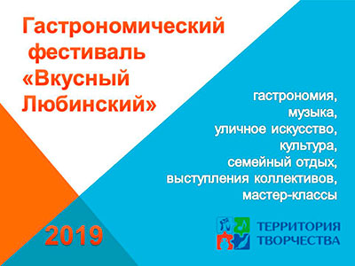

Гастрономический фестиваль "Вкусный Любинский"
Гастрономический фестиваль "Вкусный Любинский" в Омске проводится впервые и планируется стать ежегодным социально-культурным событием на территории Омского региона. В рамках фестиваля будут гармонично сочетается самые актуальные элементы современного культурного досуга – еда, музыка, уличное искусство, культура, семейный отдых.
Цель проекта:
Проведение гастрономического фестиваля как социально-значимого мероприятия Омского региона для сохранения и поддержки национальных культурных традиций, развития жанров народного творчества, формирование культурной привлекательности региона для гостей и жителей города.
Задачи проекта:
- Разработка единой визуальной концепции гастрономического фестиваля «Вкусный Любинский».
- Содействие развитию корпоративной культуры организаций участников фестиваля, повышение их имиджа. Повышение культуры употребления местной традиционной гастрономии.
- Совершенствование системы досуга населения.
- Налаживание деловых и партнерских отношений между участниками.
Сроки и место проведения:
Фестиваль запланирован в период с 15:00 часов до 20:00 часов 24 августа 2019 года. Изменение времени и режима проведения мероприятия может быть обусловлено погодными условиями.
Организационная группа:
Белякова Елена Валерьевна, председатель правления; Хорошавина Ольга Михайловна, Волгина Яна Павловна, Слесарчук Елена Сергеевна – сотрудники ГЦНТ. При участии компании «Яркая марка», дендропарка имени П.С. Комиссарова, Омского областного музея изобразительных искусств имени М. А. Врубеля, Туристского информационного центра Омской области, рестораторов города Омска, и информационной поддержке портала «Глагер».
В 2019 году фестиваль будет посвящен культурным традициям русского народа и единению поколений. Гастрономический фестиваль познакомит омичей и гостей нашего города с народными традициями, связанными с празднованием Яблочного Спаса, приобщит население к духовно-нравственным и традиционным культурным ценностям.
Гастрономический фестиваль приглашает в ресторан под открытым небом: на территории праздничного пространства будет организовано несколько локальных площадок из разных кухонь, но у всех будет главное в меню – «яблоко»: «Зал кавказской кухни», «Зал европейской кухни», «Зал славянской кухни», «Зал восточной кухни», «Вкусная и здоровая пища», «Кулинария», «Детское кафе», «Рыночек «Урожай», курсы различного мастерства, лекции, экскурсии и выставки.
Еще одной изюминкой мероприятия станет меню-карта гастрономического фестиваля, которая одновременно будет служить путеводителем всей территории Любинского проспекта, ну и конечно же, главное блюдо праздника – яблоко. У кого-то это будет яблочные соус к мясному блюду, а где-то европейский яблочный штрудель.
Помимо гастрономических активностей гости фестиваля смогут оценить работы уличных художников и музыкантов. Получат возможность услышать живые выступления музыкантов на музыкальных площадках.
Гастрономический фестиваль «Вкусный Любинский» - это большой семейный праздник под открытым небом, объединяющий жителей и туристов региона вне зависимости от их возраста, социального статуса и национальной принадлежности.
Идея проекта - собрать на одной площадке необычные, уникальные гастрономические предложения, существующие в Омском регионе, привить культуру гастрономического отдыха и приобщиться к наследию гастрономической культуры советской эпохи.
Проект ставит также перед собой образовательные и просветительские цели, поэтому концепцией предусмотрены места для проведения мастер-классов и лектории по осознанному потреблению «Нулевые отходы», «Яблоко раздора», «Умами пятый вкус» и другого рода мастер-классов и лекториев.
Фестиваль, по ожиданию организаторов, будет способствовать расширению зрительской аудитории, воспитанию эстетического и нравственного потенциала, художественного вкуса, интеллектуальному и духовному развитию населения города, а также улучшению имиджа Омской области, повышению культурной привлекательности за счет приобщения жителей региона к участию в народных праздниках (Яблочный Спас), как части культуры современного общества, способствующего её развитию, трансляции в новом межтерриториальном социокультурном пространстве.